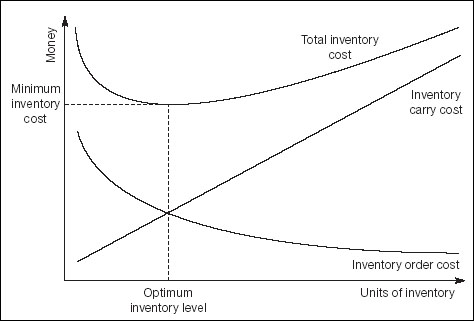

Too much inventory costs you money. It ties up cash in stock that can, of course, become obsolete or damaged. At the other extreme, not enough inventory tests customer loyalty and leads to lost or delayed sales. The projections discussed in Chapter 13 reveal your required inventory levels. However, this is not necessarily the optimum level, which can be identified using some simple arithmetic. The starting point is to recognize that in this respect the only costs that vary are:
Ordering costs – the costs of processing purchase orders, taking delivery, tooling up for a production run, and so on. Ordering costs per unit decline as volumes increase due to economies of scale.
Carrying costs – including the costs of storage, insurance and funding. These increase steadily with volume.
Figure 23.4 shows these costs separately and combined. The top curve is the sum of the figures that are used to plot the lower two curves. The point where inventory costs are lowest – the optimum inventory level where ordering and carrying costs are minimized – is where they equal each other. In other words, in any one period, the quantity of inventory that you should order is the quantity where:
| Total ordering costs | = | Total carrying cost |
| or | ||
| Number of orders × cost per order | = | Average inventory × carry cost per unit |

For just-in-time inventory management, the reorder point is triggered when inventory falls to a level equivalent to daily demand × delivery time in days. This presupposes that demand is steady and delivery is always on time. Maybe you want to carry a buffer stock?
The optimum inventory level is based on an accurate projection of sales. If demand runs higher than expected, you could run out of stock. This is another situation where the normal can be used:
Forecast sales for a given period; find the mean and standard deviation using the techniques explained on p. 361 (Be certain about uncertainty).
Decide the acceptable risk associated with having too much or too little inventory (i.e. we will accept a 10% risk of running out of stock).
Find the sales volumes associated with these percentages (i.e. in the tails of the normal curve).
You have the required range for inventory.